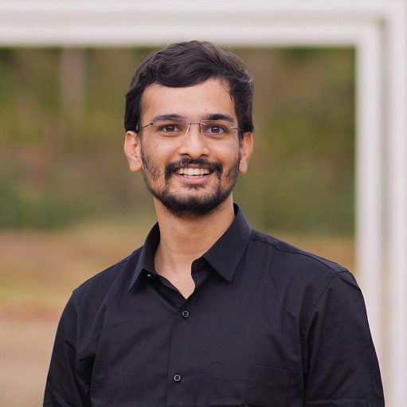

People & places
AI and forecasting for the changing rhythms of cities and events.
Explore research ↗Hello, I’m
Curious about people,
patterns and the natural world.
I’m a researcher at TU Delft, a photographer and a naturalist. My work moves between forecasting how crowds gather and exploring the remarkable details of nature.


My work brings together research, technology, nature and a love of looking more closely.
AI and forecasting for the changing rhythms of cities and events.
Explore research ↗From Butterfly Vision to scientific software and computer vision.
See projects ↗Photography, birdwatching, butterflies and astronomy.
Explore interests ↗Research, fieldwork and making things have taken me from the Western Ghats to the Netherlands.
Third place with my team at the AI & Mobility Hackathon, exploring an NDW challenge on traffic data and forecasting.
See milestones ↗Butterfly Vision grew from field observation and an interest in helping people identify Indian butterflies.
Explore the project ↗My MTech at Amrita brought together machine learning and wildlife research, with a thesis on fine-grained species detection.
More about my journey ↗From butterfly walks in Coimbatore to conversations about the role of technology in understanding nature.

A story about how field photography and AI came together to make butterfly identification more accessible.
Read the original story ↗Article image: The Times of India
Coverage of biodiversity observations by The Nature and Butterfly Society and its members in Coimbatore.
Read the original story ↗Article image: Express
My fascination with nature led me to years of butterfly observation, community surveys and photography. It also inspired tools that help others identify and appreciate wildlife.